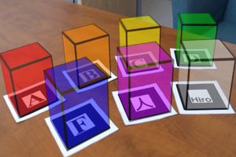

The goal of this collection is to provide a set of basic and instructive examples that introduce the various features in the Javascript-based Augmented Reality (AR) library, AR.js. Advanced three.js examples are also included.
Viewing the AR examples will require a device with a camera and one or both of the Hiro and Kanji marker patterns (either printed or displayed on a second device).
{kind=link}
{kind=link}

Basic Cube
A basic scene that superimposes a cube on a Hiro marker.

Many Cubes
Many Cubes
A scene that superimposes different colored cubes on a Hiro, Kanji, and letter markers.
Smoothed Controls
The basic scene, recreated using "smoothed controls", which interpolates the marker location from frame to frame at an adjustable rate.

Image Texture
An image is positioned to cover a Hiro marker.

Rotating Globe
A rotating globe (illuminated by a point light) is positioned above a Hiro marker.
Video Texture
A flat plane, with a video for a texture, is positioned to cover a Hiro marker.

Shader
A flat plane moves up and down above a Hiro marker; position and tint color are controlled by vertex and fragment shaders.
Loading 3D Models
A 3D model (obj and mtl files) are loaded and displayed above a Hiro marker.